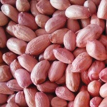
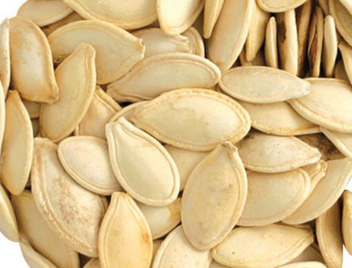

Nutritive value of pulses
Pulses contain essential nutrients such as proteins of low biological value and B-vitamins (except for riboflavin) as well as minerals such as iron, potassium and magnesium. Pulses contain carbohydrates but in low amounts. They are also low in fat content, except for soya beans which are a very good source of fat. Pulses are also rich in dietary fibre.
Uses of pulses
Pulses are used in making gravies, stews, soups and bites. They can also be used to make salads and desserts. They can be ground to fine powder and used in thickening and adding extra protein to the meal. In vegetarian meals, cooked pulses are the main source of protein. Pulses can also be served with other starchy foods such as ugali, rice and pasta.
Nuts and oil seeds
Nuts are seeds enclosed in shells. These are highly nutritious and healthy foods that can provide a wide range of essential nutrients and health benefits. They are good sources of proteins, minerals and vitamins. Nuts also contain high amounts of fats, which offer potential benefits for both brain health and function. There are different varieties of nuts, such as cashew nuts, groundnuts, walnuts, Oysternut, Brazil nuts and almonds.
Oil seeds contain a high amount of oil. They are also known as oil-rich seeds. Oil is extracted from these seeds and used for various purposes, primarily as a source of edible oil used for cooking. In contrast, whole oil seeds can be ground into flour or fine powder and used during cooking. Examples of oil seeds are sunflower, sesame (or simsim), pumpkin seeds and cotton seeds. Figure 6.2 shows the types of nuts and oil seeds, and Figure 6.3 shows oils from oil seeds.

